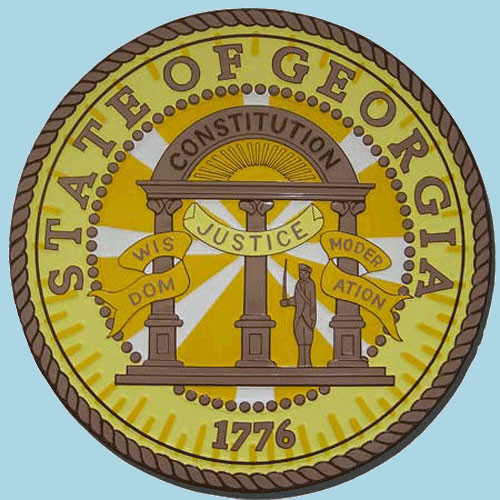
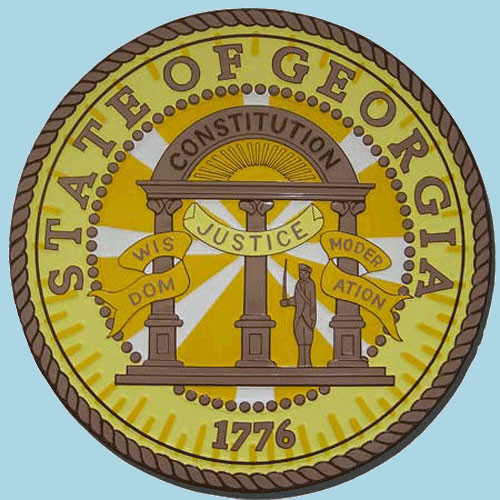

About Us
Hazzard County occupies some of the most sceninc landscape in Georgia. Spend hours driving quaint country backroads, pass time fishing or wet your whistle at the famous Boar's Nest owned by our own county commisioner J.D. Hogg. The Boar's Nest is so popular, that many well-known musicians have been known to show up un-announced to provide a free show for any patron lucky enough to be there, from time to time. It is also the county where the infamous Duke brand moonshine was illegally created during prohibition. Unfortunately, Jesse Duke has promised the United States Government that he will no longer make his moonshine, but you may be lucky enough to find an old-timer who may have a jar or two on hand for you to try. Take a look around and see what we have to offer, who knows? You may just decide to stay here yourself.